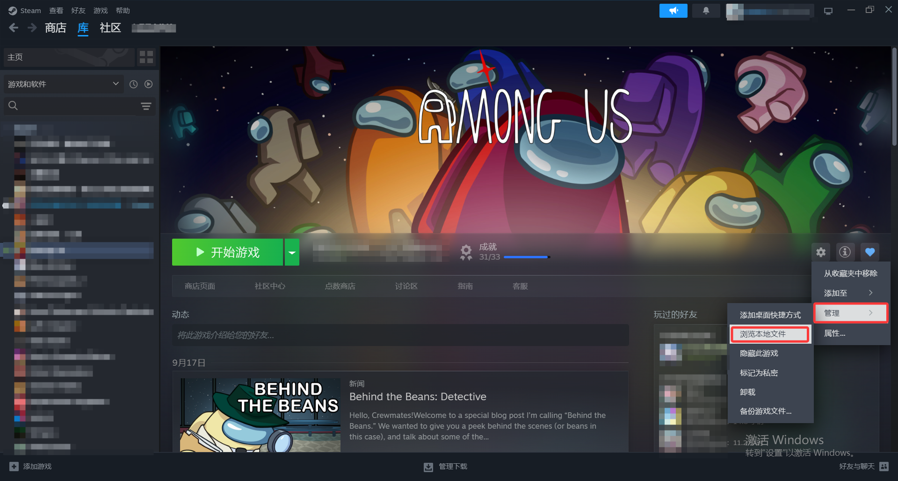
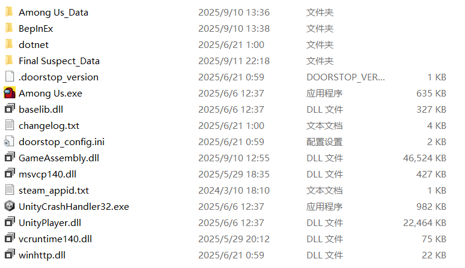

安装模组
下载安装包
请通过以下方式获取最新版本安装包：
Steam 平台安装
默认安装路径参考
C:\Program Files (x86)\Steam\steamapps\common\Among Us
快速打开方法：按下 Win + R 组合键，输入路径后回车。
通过 Steam 客户端右键点击《Among Us》→ 选择「属性」→ 切换到「本地文件」→ 点击「浏览」打开游戏根目录。

将下载的 Final Suspect 压缩包解压到游戏根目录，最终文件结构应包含相应内容：

不要多套一层文件夹
解压后请核对目录结构。如果你看到的是
Among Us\FinalSuspect\BepInEx\ 这样的层级，
说明解压时多套了一层，需要把里面的内容移到游戏根目录。
Epic 平台安装
默认安装路径参考
C:\Program Files\Epic Games\AmongUs
快速打开方法：通过 Epic 客户端库中找到《Among Us》→ 点击右侧「⋯」→ 选择「在资源管理器中显示」。
按照上述方法打开 Epic 平台游戏根目录。
将下载的 Final Suspect 压缩包解压到游戏根目录。
C:\Program Files\Epic Games\AmongUs\BepInEx\plugins\FinalSuspect.dll
Epic 平台限制
必须安装在 Epic 官方游戏目录下。非官方路径会导致校验失败。